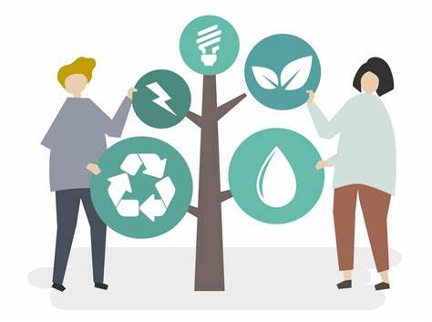

¿Qué es el Consumo Responsable?
El consumo responsable se refiere a la práctica de adquirir productos y servicios de manera consciente y sostenible. Implica considerar el impacto social, económico y ambiental de nuestras decisiones de compra. Al optar por productos responsables, apoyamos a las empresas que promueven prácticas éticas y sostenibles, contribuyendo así a un futuro más verde.
Beneficios del Consumo Responsable
- Reducción de residuos y contaminación.
- Fomento de la economía local y sostenible.
- Apoyo a condiciones laborales justas.
- Conciencia y educación sobre la sostenibilidad.